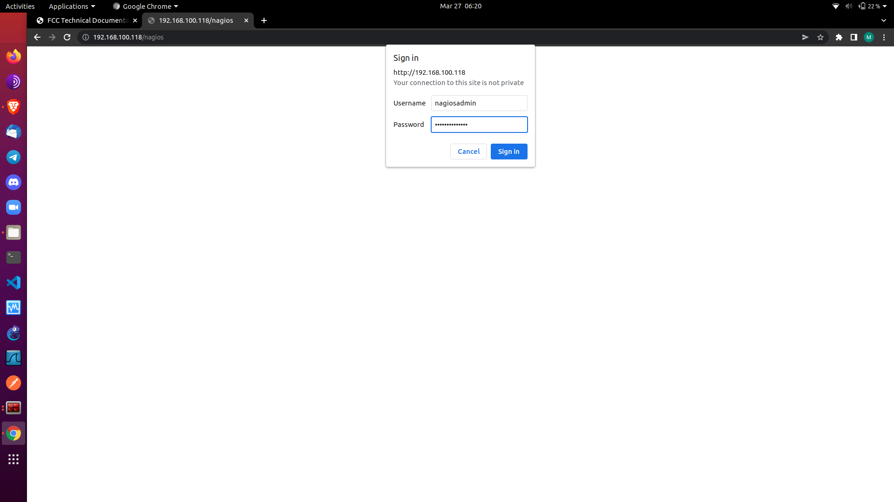
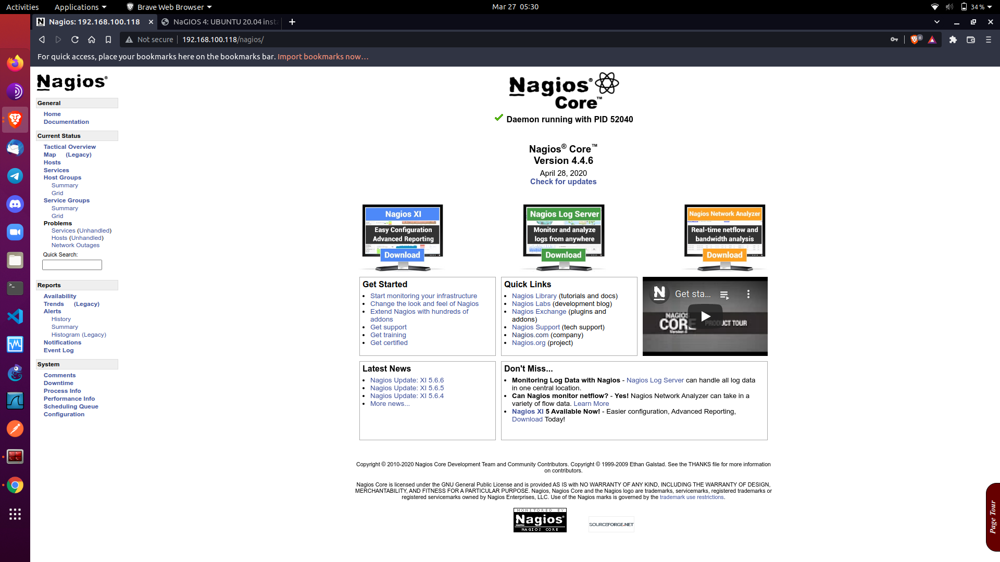
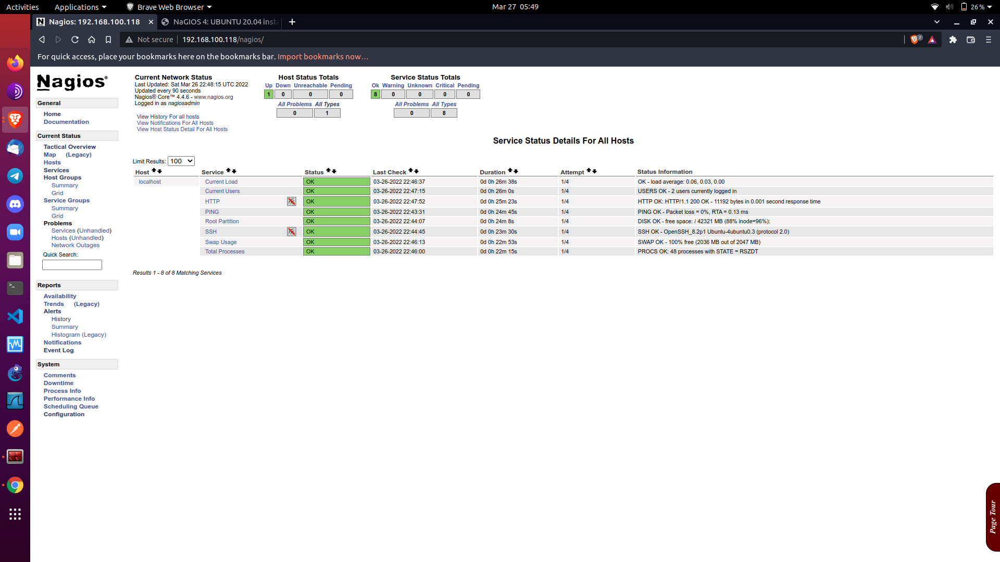
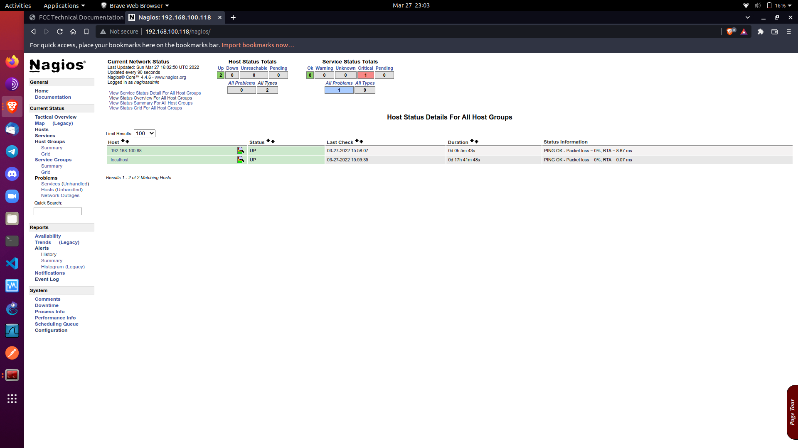
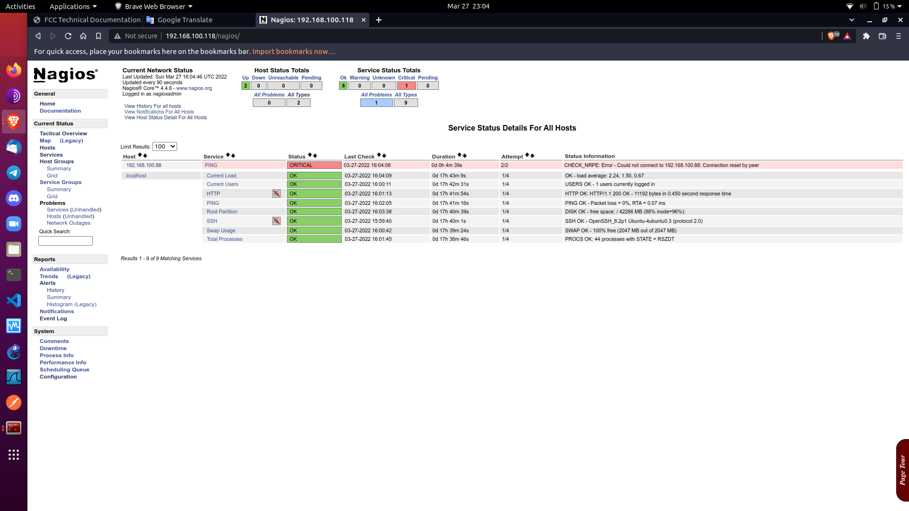

A firewall is a network security device that monitors incoming and outgoing network traffic and decides whether to allow or block specific traffic based on a defined set of security rules. Firewalls have been a first line of defense in network security for over 25 years. They establish a barrier between secured and controlled internal networks that can be trusted and untrusted outside networks, such as the Internet. A firewall can be hardware, software, or both.
What is Snort? Snort is the foremost Open Source Intrusion Prevention System (IPS) in the world. Snort IPS uses a series of rules that help define malicious network activity and uses those rules to find packets that match against them and generates alerts for users. Snort can be deployed inline to stop these packets, as well. Snort has three primary uses: As a packet sniffer like tcpdump, as a packet logger — which is useful for network traffic debugging, or it can be used as a full-blown network intrusion prevention system. Snort can be downloaded and configured for personal and business use alike.
What are my options for buying and using Snort? Once downloaded and configured, Snort rules are distributed in two sets: The “Community Ruleset” and the “Snort Subscriber Ruleset.” The Snort Subscriber Ruleset is developed, tested, and approved by Cisco Talos. Subscribers to the Snort Subscriber Ruleset will receive the ruleset in real-time as they are released to Cisco customers. You can download the rules and deploy them in your network through the Snort.org website. The Community Ruleset is developed by the Snort community and QAed by Cisco Talos. It is freely available to all users.
For more information about Snort Subscriber Rulesets available for purchase, please visit the Snort product page.
Find the appropriate package for your operating system and install.
Siapkan Aplikasi Pendukung.
root@server-IDS-IPS:~# sudo locale-gen id_ID.UTF-8
root@server-IDS-IPS:~# sudo apt-get update
ifconfig dulu cek interface dan IP nya, Lalu Install
root@server-IDS-IPS:~# apt-get install oinkmaster snort snort-common snort-rules-default snort-doc
Akan Di Tanya interface yang akan di monitor, misalnya: enp0s3 range IP yang di monitor, misalnya: 192.168.100.0/24
Cek Snort
root@server-IDS-IPS:~# snort -C
Jalankan Snort mode NIDS
root@server-IDS-IPS:~# snort -dev -l /var/log/snort/ -h 192.168.0.0/24 -c /etc/snort/snort.conf &
Ingin supaya bisa di baca di kemudian hari oleh wireshark harus di simpan dalam bentuk binary, dengan perintah
/usr/sbin/snort -m 027 -b -l /var/log/snort/ -u arif -c /etc/snort/snort.conf -S HOME_NET=[192.168.100.0/24] -i wlp2s0 &
Biar tidak rewel, sebaiknya permission /var/log/snort di jadikan
chmod 770 /var/log/snort
Ini sebetulnya cara yang tidak baik!!! PAKE YANG BAWAH AJA BUAT JALANKAN SNORT NYA
Menjalankan Snort mode NIDS, log text
log /var/log/snort bisa di baca oleh manusia, kita bisa menjalankan snort dengan perintah,
root@server-IDS-IPS:~# snort -c /etc/snort/snort.conf -l /var/log/snort/ -K ascii -D
Check Snort
root@server:/home/arif# ps ax | grep snort
Kalo Kill Snort
root@server:/var/log/snort# killall snort
root@server:/var/log/snort# ps ax | grep snort
7444 pts/0 S+ 0:00 grep --color=auto snort
Check
root@server:/etc/snort# vi snort.conf
root@server:/etc/snort# vi classification.config
KALO 1 ARTI NYA WARNA MERAH BAGUS
KALO 2 ARTI NYA KUNING WARNING
KALO 3 ARTINYA IJO BAHAYA
classification: trojan-activity,A Network Trojan was detected, 1
root@server:/etc/snort# cd rules/
root@server:/etc/snort/rules# more community-oracle.rules
Yang Penting Kata-Kata content:
Menjalankan Snort mode NIDS, log text
Agar log /var/log/snort bisa di baca oleh manusia, kita bisa menjalankan snort dengan perintah,
root@server:/var/log/snort# snort -c /etc/snort/snort.conf -l /var/log/snort/ -K ascii -D
root@server:/var/log/snort# watch -n 3 tail /var/log/snort/alert
Sebagai Contoh Kalo Kita Scan Nmap AKAN keluar
nmap -v -sS -O 192.168.100.21
[**] [1:1228:7] SCAN nmap XMAS [**]
[Classification: Attempted Information Leak] [Priority: 2]
09/25-17:36:04.058342 192.168.100.122:63434 -> 192.168.100.21:1
TCP TTL:55 TOS:0x0 ID:16877 IpLen:20 DgmLen:60
Kalo Untuk Buat Snort Rules Harus Ngerti Regex
Kalo Mau Nyadap Paket Yang Lewat Dan Kita Kasih REGEX Supaya Kita Extrak Ini Mahkluk Apa Si Kira-Kira Ke Gitu Nyadap Seperti Kayak WIRESHARK Kalo Ini Nyadap Versi CLI TCPDUMP
root@server:/var/log/snort# snort -C
Membuat Rules Sederhana
root@server:/var/log/snort# cd /etc/snort/rules/
root@server:/etc/snort/rules# vi local.rules
Seperti Ini Tuliskan Dan Save
alert tcp any any -> 192.168.100.21 22 (msg: "Ada Yang Connect SSH Ke Mesin!!"; sid:1000001;)
Kill Dulu
root@server:/etc/snort/rules# killall snort
Kita remove dulu biar bersih log nya
root@server:/etc/snort/rules# cd /var/log/snort/
root@server:/var/log/snort# rm -Rf *
Jalan Kan Lagi
root@server:/etc/snort/rules# snort -c /etc/snort/snort.conf -l /var/log/snort/ -K ascii -D
Cek Pake Ps Ax (Liat Software Jalan Di Belakang Layar) Dan Pakai wacth
root@server:/etc/snort/rules# ps ax
root@server:/var/log/snort# watch -n 3 tail /var/log/snort/alert
Kita Coba SSH Ke Server
Akan Keluar
[**] [1:1000001:0] Ada Yang Connect SSH Ke Mesin!! [**]
[Priority: 0]
09/25-18:32:00.622198 192.168.100.79:51814 -> 192.168.100.21:3000
Bisa Cek Ke
root@server:/var/log/snort# vi alert
What is Snowl? Snowl is a modern web-based GUI (graphical user interface) for snort. Snort is an open source IDS/IPS (intrusion detection/prevention system). It is command-line tool and has not own graphical interface. Therefore, we decided to create Snowl so that the snort setting became automatic and understandable, and the analysis of threats was as convenient as possible.
Please choose your operating system to view the installation guide i use ubuntu.
Biasa Nya Saya Simpan Hasil Download Nya Disini
root@server-IDS-IPS:/var/log/snort# cd /usr/local/src/
root@server-IDS-IPS:/usr/local/src# wget https://snowl.io/download/snowl-install-ubuntu.sh
root@server-IDS-IPS:/usr/local/src# ls
snowl-install-ubuntu.sh
root@server-IDS-IPS:/usr/local/src# chmod 755 snowl-install-ubuntu.sh
root@server-IDS-IPS:/usr/local/src# ./snowl-install-ubuntu.sh
KETIK yes
Install Snowl? (yes/no, default yes): yes
AKAN DI TANYA LAGI KETIK yes
CEK DI WEB BROWSER
192.168.100.216:5500
LOGIN USERNAME & PASSWORD NYA
admin
123456
UBAH PASSWORD NYA BIAR AMAN !!!
CEK SNOWL
root@server-IDS-IPS:/usr/local/src# ps -ef | grep snowl
root@server-IDS-IPS:/usr/local/src# netstat -ntpl | grep 5500
CARA MENAMBAHKAN RULE
INI TERGANTUNG SERVER NYA, SERVER NYA ADA APLIKASI APA SAJA
AGA BERAT INI TERGANTUNG SPEK SERVER NYA
1. BUKA DI BROWSER 192.168.100.216:5500
2. PILIH THREAT POLICIES
3. Add new policy
4. UNTUK Rule urls KLIK DI BAWAHNYA ADA Examples; ADA 2 Rules, COPY SAJA YANG SATU ADA oinkcode=
HARUS LOGIN DULU DI WEBSITE SNORT NYA UNTUK MELIHAT ID NYA INI BISA PAKE BAWAAN Snort ATAU DOWNLOAD
Rules Snort DI SINI https://www.snort.org/downloads PAKE YANG Rules Community KARENA GRATIS,
SAMA SAJA SEPERTI BAWAAN NYA SEBELUM DOWNLOAD RULE NYA, CEK VERSION SNORT NYA DULU CARA NYA
KALO VERSION NYA 2.9.16 PAKE RULE NYA V2.9 KALO VERISON NYA 3.0 PAKE V3.0
root@server-IDS-IPS:/var/log/snort# snort --version
COPY SAJA DIBAGIAN Snort v2.9
KETIKAN SEPERTI DI BAWAH
Name : PolicySatu
Description : Policy Satu untuk keamanan VLAN intarnet
Rule urls : https://www.snort.org/downloads/community/community-rules.tar.gz
https://rules.emergingthreats.net/open-nogpl/snort-2.9.0/emerging.rules.tar.gz
IP blacklist urls : https://talosintelligence.com/documents/ip-blacklist
SAVE
ITU SAJA YANG DI TAMBAHKAN PILIH (SAVE)
SNOWL INSTALLATION
Server web diperlukan untuk pengoperasian Snowl. Itu bisa Apache atau Nginx.
Pilih dan instal salah satunya, misalnya Apache.
PILIH SALAH SATU PENGEN PAKE APA apache2 ATAU PAKE nginx
Apache installation
root@server-IDS-IPS:/home/arif#sudo apt install apache2
Nginx installation
root@server-IDS-IPS:/home/arif#sudo apt install nginx
Jalankan perintah berikut untuk menginstal Snowl:
wget https://snowl.io/download/snowl_1.7.2_amd64.deb && dpkg -i ./snowl_1.7.2_amd64.deb
Konfigurasikan server web untuk bekerja dengan Snowl. Untuk tujuan ini, lakukan hal berikut:
/opt/snowl/snowl-configure-httpd
UNTUK MENGHAPUS SNOWL CEK DULU
root@server-IDS-IPS:/home/arif# dpkg -l | grep snowl
ii snowl-sensor 1.7.2 amd64 Intrusion Detection System SNOWL
STOP DULU
root@server-IDS-IPS:/home/arif# service snowl-sensor stop
root@server-IDS-IPS:/home/arif# service snowl stop
HAPUS SNOWL
root@server-IDS-IPS:/home/arif# dpkg -r snowl
root@server-IDS-IPS:/home/arif# dpkg -r snowl-sensor
CEK
root@server-IDS-IPS:/home/arif# dpkg -l | grep snort
STOP DULU
root@server-IDS-IPS:/home/arif# service snowl stop
MENGHAPUS SNORT
root@server-IDS-IPS:/home/arif# apt-get remove snort*
root@server-IDS-IPS:/home/arif# apt-get remove --purge snort*
One potential concern is rootkits. Rootkits are software secretly installed by malicious intruders that allow those users to resume access to servers after security is breached. This is a very dangerous problem, because even after the vector entry that the user originally used to gain permanent access, they can continue to log into the server using the rootkit they installed. One tool that can help you protect your system from problems like this is rkhunter. This software checks your system against a database of known rootkits. Also, it can check other system files to make sure they match the expected properties and values.
Please choose your operating system to view the installation guide i use ubuntu.
Compile RKHunter
INSTALL APLIKASI PENDUKUNG
root@server-IDS-IPS:/usr/local/src# sudo locale-gen id_ID.UTF-8
root@server-IDS-IPS:/usr/local/src# sudo apt-get update
root@server-IDS-IPS:/usr/local/src# sudo apt-get -y install binutils libreadline5 libruby ruby ssl-cert unhide.rb mailutils
MASUKAN
- Site localhost
- Relay Site kalau pakai INDIHOME : smtp.telkom.net
Sebelum Download Check Versi Terakhir
cd /usr/local/src/
root@server-IDS-IPS:/usr/local/src# wget http://downloads.sourceforge.net/project/rkhunter/rkhunter/1.4.6/rkhunter-1.4.6.tar.gz
root@server-IDS-IPS:/usr/local/src# tar xzvf rkhunter-1.4.6.tar.gz*
root@server-IDS-IPS:/usr/local/src# cd rkhunter-1.4.6*
Install Di /usr
root@server-IDS-IPS:/usr/local/src/rkhunter-1.4.6# ./installer.sh --layout /usr --install
root@server-IDS-IPS:/usr/local/src/rkhunter-1.4.6# rkhunter --versioncheck
OUTPUT
[ Rootkit Hunter version 1.4.6 ]
Checking rkhunter version...
This version : 1.4.6
Latest version: 1.4.6
UPDATE DATA FILE
root@server-IDS-IPS:/usr/local/src/rkhunter-1.4.6# rkhunter --update
Set properties update / baseline
root@server-IDS-IPS:/usr/local/src/rkhunter-1.4.6# rkhunter --propupd
OUTPUT
[ Rootkit Hunter version 1.4.6 ]
File created: searched for 180 files, found 139
Jalankan
root@server-IDS-IPS:/usr/local/src/rkhunter-1.4.6# rkhunter -c --enable all --disable none
Dia akan menjalan test per section.
Log bisa di lihat di
root@server-IDS-IPS:/usr/local/src/rkhunter-1.4.6# nano /var/log/rkhunter.log
Atau Pake Ini
root@server-IDS-IPS:/usr/local/src/rkhunter-1.4.6# cat /var/log/rkhunter.log | grep warning
[21:18:08] Info: No mail-on-warning address configured
Alternative lain, perintahkan rkhunter untuk print warning ke layar
root@server-IDS-IPS:/usr/local/src/rkhunter-1.4.6# rkhunter -c --enable all --disable none --rwo
Tuning Konfigurasi RKHunter supaya lebih baik
root@server-IDS-IPS:/usr/local/src/rkhunter-1.4.6# vi /etc/rkhunter.conf
Notifikasi email
MAIL-ON-WARNING="your_user@domain.com"
MAIL_CMD=mail -s "[rkhunter] Warnings found for ${HOST_NAME}"
Atau
MAIL-ON-WARNING="root@localhost"
MAIL_CMD=mail -s "[rkhunter] Warnings found for ${HOST_NAME}"
Ijinkan Root Ssh Login, CONTOH
root@server-IDS-IPS:/usr/local/src/rkhunter-1.4.6# ALLOW_SSH_ROOT_USER=without-password
Check
root@server-IDS-IPS:/usr/local/src/rkhunter-1.4.6# rkhunter -C
TEST LAGI APAKAH ADA WARNING
root@server-IDS-IPS:/usr/local/src/rkhunter-1.4.6# rkhunter -c --enable all --disable none --rwo
Harusnya ada minimal 1 warning, karena konfigurasi rkhunter sudah di ubah,
Update profile rkhunter
root@server-IDS-IPS:/usr/local/src/rkhunter-1.4.6# rkhunter --propupd
Cek email untuk notifkasi dari rkhunter
Cron
root@server-IDS-IPS:/usr/local/src/rkhunter-1.4.6# crontab -e
KALAU TIDAK ADA MASALAH, MAKA TIDAK ADA EMAIL YANG AKAN DIKIRIM
Nagios is a popular open-source monitoring system. Nagios maintains an inventory of your servers and monitors them so you know your critical services are up and running. Using a monitoring system like Nagios is an essential tool for any production environment, because by monitoring uptime, CPU usage, or disk space, you can prevent problems before they occur, or before your users contact you. Here we will install Nagios 4 and configure it so that we can monitor host resources on the Nagios web interface. We will also setup the Nagios Remote Plugin Executor (NRPE), which will run as the remote host agent so that we can monitor its resources.
- Two Ubuntu 20.04 servers with root user privige. Firewall with ufw.
- Servers with Nagios will be called Nagios servers.
- Servers without Nagios will be called Ubuntu servers.
- Nagios Server will run Apache and PHP.
- Nagios Server is usually run behind a Firewall or VPN. If you run it on a Public IP, you have to be more serious about installing TLS/SSL etc. This tutorial assumes, Nagios server is behind Firewall.
Dua VPCS Ubuntu 20.04 satu untuk server Nagios dan satu untuk klien Nagios.
Akses ke akun pengguna root (atau akses ke akun admin dengan hak akses root.
Biasa Nya Saya Sebelum Install NaGIOS Ubah Nama Server Dulu Menjadi server-nagios lalu reboot server nya
arif@server-ubuntu:~$ sudo vim /etc/hostname
server-nagios
Langkah 1: Masuk ke Server & Perbarui Paket OS Server
arif@server-nagios:~$ sudo apt-get update
Langkah 2: Instal Dependensi yang Diperlukan
Sebelum memulai, Kita perlu menginstal beberapa dependensi yang diperlukan untuk menginstal Nagios di sistem Anda. Anda dapat menginstal semuanya dengan perintah berikut:
arif@server-nagios:~$ sudo apt-get install autoconf bc gawk dc build-essential gcc libc6 make wget unzip apache2 php
libapache2-mod-php libgd-dev libmcrypt-dev make libssl-dev snmp libnet-snmp-perl gettext -y
Setelah semua dependensi diinstal, Anda dapat melanjutkan untuk mengunduh inti Nagios 4.
Langkah 3: Unduh dan Instal Nagios 4
Pertama, unduh versi terbaru Nagios 4 dari situs resminya menggunakan perintah berikut:
arif@server-nagios:~$ wget https://assets.nagios.com/downloads/nagioscore/releases/nagios-4.4.6.tar.gz
arif@server-nagios:~$ ls
nagios-4.4.6.tar.gz
Setelah unduhan selesai, ekstrak file yang diunduh dengan perintah berikut:
arif@server-nagios:~$ tar -xvzf nagios-4.4.6.tar.gz
Selanjutnya, ubah direktori ke direktori yang diekstraksi dan konfigurasikan dengan perintah berikut:
arif@server-nagios:~$ cd nagios-4.4.6/
arif@server-nagios:~/nagios-4.4.6$ ./configure --with-httpd-conf=/etc/apache2/sites-enabled
Kita harus mendapatkan output berikut:
*** Configuration summary for nagios 4.4.6 2020-04-28 ***:
General Options:
-------------------------
Nagios executable: nagios
Nagios user/group: nagios,nagios
Command user/group: nagios,nagios
Event Broker: yes
Install ${prefix}: /usr/local/nagios
Install ${includedir}: /usr/local/nagios/include/nagios
Lock file: /run/nagios.lock
Check result directory: /usr/local/nagios/var/spool/checkresults
Init directory: /lib/systemd/system
Apache conf.d directory: /etc/apache2/sites-enabled
Mail program: /bin/mail
Host OS: linux-gnu
IOBroker Method: epoll
Web Interface Options:
------------------------
HTML URL: http://localhost/nagios/
CGI URL: http://localhost/nagios/cgi-bin/
Traceroute (used by WAP):
Review the options above for accuracy. If they look okay,
type 'make all' to compile the main program and CGIs.
Selanjutnya, buat nagios dengan perintah berikut:
arif@server-nagios:~/nagios-4.4.6$ make all
Selanjutnya, buat pengguna dan grup Nagios dan tambahkan ke grup www-data dengan perintah berikut:
arif@server-nagios:~/nagios-4.4.6$ sudo make install-groups-users
arif@server-nagios:~/nagios-4.4.6$ sudo usermod -a -G nagios www-data
Selanjutnya, jalankan perintah berikut untuk menginstal binari Nagios, daemon dan mode perintah:
arif@server-nagios:~/nagios-4.4.6$ sudo make install
arif@server-nagios:~/nagios-4.4.6$ sudo make install-daemoninit
arif@server-nagios:~/nagios-4.4.6$ sudo make install-commandmode
Selanjutnya, instal contoh konfigurasi skrip dan konfigurasi web Apache menggunakan perintah berikut:
arif@server-nagios:~/nagios-4.4.6$ sudo make install-config
arif@server-nagios:~/nagios-4.4.6$ sudo make install-webconf
Selanjutnya, aktifkan modul rewrite dan cgi dengan perintah berikut:
arif@server-nagios:~/nagios-4.4.6$ sudo a2enmod rewrite cgi
Selanjutnya, restart layanan Apache untuk menerapkan perubahan:
arif@server-nagios:~/nagios-4.4.6$ sudo systemctl restart apache2
Langkah 4: Buat Pengguna Admin Nagios
Selanjutnya, Kita perlu membuat pengguna Nagios untuk mengakses antarmuka web Nagios. Kita dapat membuatnya dengan perintah berikut:
arif@server-nagios:~/nagios-4.4.6$ sudo htpasswd -c /usr/local/nagios/etc/htpasswd.users nagiosadmin
Kita akan diminta untuk mengatur kata sandi seperti yang ditunjukkan di bawah ini:
New password:
Re-type new password:
Adding password for user arifadmin
Langkah 5: Konfigurasikan Nagios
Sebelum mengonfigurasi Nagios, Kita harus menginstal Plugin Nagios dan Plugin NRPE. Kita dapat menginstalnya dengan perintah berikut:
arif@server-nagios:~/nagios-4.4.6$ sudo apt-get install monitoring-plugins nagios-nrpe-plugin -y
Setelah semua paket diinstal, buat direktori untuk menyimpan semua konfigurasi:
arif@server-nagios:~/nagios-4.4.6$ sudo mkdir -p /usr/local/nagios/etc/servers
Selanjutnya, edit file konfigurasi Nagios dan tentukan direktori server:
arif@server-nagios:~/nagios-4.4.6$ sudo vim /usr/local/nagios/etc/nagios.cfg
Buang Pagar nya #
Ubah baris berikut:
cfg_dir=/usr/local/nagios/etc/servers
Selanjutnya, edit Nagios resource.cfg dan tentukan jalur plugin Nagios:
arif@server-nagios:~/nagios-4.4.6$ sudo vim /usr/local/nagios/etc/resource.cfg
Yang ini kasih pagar -> #$USER1$=/usr/local/nagios/libexec
Ubah baris berikut:
$USER1$=/usr/lib/nagios/plugins
Simpan dan tutup file kemudian edit contacts.cfg dan tentukan nama kontak dan alamat email Anda:
arif@server-nagios:~/nagios-4.4.6$ sudo vim /usr/local/nagios/etc/objects/contacts.cfg
Ubah baris berikut sesuai kebutuhan Anda:
define contact {
contact_name nagiosadmin ; Short name of user
use generic-contact ; Inherit default values from generic-contact template (defined above)
alias Nagios Admin ; Full name of user
email marifrizki27@gmail.com ; <<***** CHANGE THIS TO YOUR EMAIL ADDRESS ******
}
Simpan dan tutup file kemudian edit command.cfg dan tentukan perintah nrpe check:
arif@server-nagios:~/nagios-4.4.6$ sudo vim /usr/local/nagios/etc/objects/commands.cfg
Tambahkan baris berikut di akhir file:
define command{
command_name check_nrpe
command_line $USER1$/check_nrpe -H $HOSTADDRESS$ -c $ARG1$
}
Simpan dan tutup file kemudian mulai layanan Nagios dan aktifkan untuk memulai saat reboot sistem:
arif@server-nagios:~/nagios-4.4.6$ sudo systemctl start nagios
arif@server-nagios:~/nagios-4.4.6$ sudo systemctl enable nagios
Kita juga dapat memverifikasi status layanan Nagios dengan perintah berikut:
arif@server-nagios:~/nagios-4.4.6$ sudo systemctl status nagios
Output
● nagios.service - Nagios Core 4.4.6
Loaded: loaded (/lib/systemd/system/nagios.service; enabled; vendor preset: enabled)
Active: active (running) since Sat 2022-03-26 22:21:00 UTC; 1min 12s ago
Docs: https://www.nagios.org/documentation
Process: 52032 ExecStartPre=/usr/local/nagios/bin/nagios -v /usr/local/nagios/etc/nagios.cfg (co>
Process: 52038 ExecStart=/usr/local/nagios/bin/nagios -d /usr/local/nagios/etc/nagios.cfg (code=>
Main PID: 52040 (nagios)
Tasks: 6 (limit: 1073)
Memory: 2.8M
CGroup: /system.slice/nagios.service
├─52040 /usr/local/nagios/bin/nagios -d /usr/local/nagios/etc/nagios.cfg
├─52041 /usr/local/nagios/bin/nagios --worker /usr/local/nagios/var/rw/nagios.qh
├─52042 /usr/local/nagios/bin/nagios --worker /usr/local/nagios/var/rw/nagios.qh
├─52043 /usr/local/nagios/bin/nagios --worker /usr/local/nagios/var/rw/nagios.qh
├─52044 /usr/local/nagios/bin/nagios --worker /usr/local/nagios/var/rw/nagios.qh
└─52048 /usr/local/nagios/bin/nagios -d /usr/local/nagios/etc/nagios.cfg
Mar 26 22:21:00 server-nagios nagios[52040]: qh: Socket '/usr/local/nagios/var/rw/nagios.qh' success>
Mar 26 22:21:00 server-nagios nagios[52040]: qh: core query handler registered
Mar 26 22:21:00 server-nagios nagios[52040]: qh: echo service query handler registered
Mar 26 22:21:00 server-nagios nagios[52040]: qh: help for the query handler registered
Mar 26 22:21:00 server-nagios nagios[52040]: wproc: Successfully registered manager as @wproc with q>
Mar 26 22:21:00 server-nagios nagios[52040]: wproc: Registry request: name=Core Worker 52041;pid=520>
Mar 26 22:21:00 server-nagios nagios[52040]: wproc: Registry request: name=Core Worker 52042;pid=520>
Mar 26 22:21:00 server-nagios nagios[52040]: wproc: Registry request: name=Core Worker 52044;pid=520>
Mar 26 22:21:00 server-nagios nagios[52040]: wproc: Registry request: name=Core Worker 52043;pid=520>
Mar 26 22:21:02 server-nagios nagios[52040]: Successfully launched command file worker with pid 52048
Terakhir, restart layanan Apache untuk menerapkan perubahan:
arif@server-nagios:~/nagios-4.4.6$ sudo systemctl restart apache2
Langkah 6: Akses UI Web Nagios
Sekarang, buka browser web Kita dan akses antarmuka web Nagios menggunakan URL http://nagios-server-ip/nagios/. Anda akan diminta untuk memberikan username dan password admin seperti yang ditunjukkan di bawah ini:
Berikan nama pengguna, kata sandi, dan kata sandi admin Nagios Kita dan klik tombol Masuk.
Kita akan melihat dasbor Nagios di halaman berikut:
Klik pada service di panel kiri, Kita akan melihat semua layanan di halaman berikut:
Langkah 7: Tambahkan Host Pemantauan ke Server Nagios
Selanjutnya, Kita perlu menginstal agen Nagios pada sistem klien dan menambahkannya ke server Nagios.
Pertama, instal paket Nagios dan NRPE pada sistem klien dengan perintah berikut:
Masuk Ke server Joomla
arif@Testing:~$ ssh arif@192.168.100.88
arif@server-joomla:~$ sudo apt-get update
arif@server-joomla:~$ sudo apt-get install nagios-nrpe-server monitoring-plugins -y
Setelah terinstal, edit file nrpe.cfg dan tentukan IP server Nagios dan IP CLient Anda:
arif@server-joomla:~$ sudo vim /etc/nagios/nrpe.cfg
Ubah baris berikut yang cocok dengan IP server dan klien Anda:
192.168.100.88 itu IP Client Joomla
192.168.100.118 itu IP Server Nagios:
server_address=192.168.100.88
allowed_hosts=127.0.0.1,::1,192.168.100.118
Simpan dan tutup file. Kemudian edit nrpe_local.cfg:
arif@server-joomla:~$ sudo vim /etc/nagios/nrpe_local.cfg
Tambahkan atau ubah baris berikut:
command[check_root]=/usr/lib/nagios/plugins/check_disk -w 20% -c 10% -p /
command[check_ping]=/usr/lib/nagios/plugins/check_ping -H 192.168.100.88 -w 100.0,20% -c 500.0,60% -p 5
command[check_http]=/usr/lib/nagios/plugins/check_http -I 192.168.100.88
command[check_ssh]=/usr/lib/nagios/plugins/check_ssh -4 192.168.100.88
Simpan dan tutup file kemudian restart layanan Nagios NRPE dan aktifkan untuk memulai saat reboot sistem:
arif@server-joomla:~$ sudo systemctl restart nagios-nrpe-server.service
arif@server-joomla:~$ sudo systemctl enable nagios-nrpe-server.service
Kita dapat memeriksa status layanan dengan perintah berikut:
arif@server-joomla:~$ sudo systemctl status nagios-nrpe-server.service
Output
● nagios-nrpe-server.service - Nagios Remote Plugin Executor
Loaded: loaded (/lib/systemd/system/nagios-nrpe-server.service; enabled; vendor preset: enabled)
Active: active (running) since Sat 2022-03-26 23:41:57 UTC; 56s ago
Docs: http://www.nagios.org/documentation
Main PID: 28782 (nrpe)
Tasks: 1 (limit: 1071)
Memory: 744.0K
CGroup: /system.slice/nagios-nrpe-server.service
└─28782 /usr/sbin/nrpe -c /etc/nagios/nrpe.cfg -f
Mar 26 23:41:57 server-joomla systemd[1]: Started Nagios Remote Plugin Executor.
Mar 26 23:41:57 server-joomla nrpe[28782]: Starting up daemon
Mar 26 23:41:57 server-joomla nrpe[28782]: Server listening on 192.168.100.88 port 5666.
Mar 26 23:41:57 server-joomla nrpe[28782]: Listening for connections on port 5666
Mar 26 23:41:57 server-joomla nrpe[28782]: Allowing connections from: 127.0.0.1,::1,192.168.100.118
Langkah 8: Tambahkan Host Klien ke Server Nagios
Selanjutnya, Kita perlu menambahkan host klien ke server Nagios dan menentukan layanan yang ingin Kita pantau.
Di server Nagios, buat file baru bernama nagiosclient.cfg:
Di Server NaGIOS
arif@server-nagios:/usr/local/nagios/etc$ sudo vim /usr/local/nagios/etc/servers/nagiosclient.cfg
define host {
use linux-server
host_name nagiosclient
alias Ubuntu Host
address 192.168.100.88
register 1
}
define service {
host_name nagiosclient
service_description PING
check_command check_nrpe!check_ping
max_check_attempts 2
check_interval 2
retry_interval 2
check_period 24x7
check_freshness 1
contact_groups admins
notification_interval 2
notification_period 24x7
notifications_enabled 1
register 1
}
define service {
host_name nagiosclient
service_description Check Users
check_command check_nrpe!check_users
max_check_attempts 2
check_interval 2
retry_interval 2
check_period 24x7
check_freshness 1
contact_groups admins
notification_interval 2
notification_period 24x7
notifications_enabled 1
register 1
}
define service {
host_name nagiosclient
service_description Check SSH
check_command check_nrpe!check_ssh
max_check_attempts 2
check_interval 2
retry_interval 2
check_period 24x7
check_freshness 1
contact_groups admins
notification_interval 2
notification_period 24x7
notifications_enabled 1
register 1
}
define service {
host_name nagiosclient
service_description Check Root / Disk
check_command check_nrpe!check_root
max_check_attempts 2
check_interval 2
retry_interval 2
check_period 24x7
check_freshness 1
contact_groups admins
notification_interval 2
notification_period 24x7
notifications_enabled 1
register 1
}
define service {
host_name nagiosclient
service_description Check HTTP
check_command check_nrpe!check_http
max_check_attempts 2
check_interval 2
retry_interval 2
check_period 24x7
check_freshness 1
contact_groups admins
notification_interval 2
notification_period 24x7
notifications_enabled 1
register 1
}
Simpan dan tutup file kemudian restart layanan Nagios untuk menerapkan perubahan:
arif@server-nagios:/usr/local/nagios/etc$ sudo systemctl restart nagios
arif@server-nagios:/usr/local/nagios/etc$ sudo systemctl status nagios
Langkah 9: Verifikasi Nagios
Sekarang, kembali ke antarmuka web Nagios dan klik hosts di panel kiri, Kita akan melihat semua host klien yang baru ditambahkan di halaman berikut:
Sekarang, klik pada tab service di panel kiri, Kita akan melihat semua layanan di halaman berikut:
OpenVPN is a virtual private network (VPN) system that implements techniques to create secure point-to-point or site-to-site connections in routed or bridged configurations and remote access facilities. It implements both client and server applications.
OpenVPN allows peers to authenticate each other using pre-shared secret keys, certificates or username/password. When used in a multiclient-server configuration, it allows the server to release an authentication certificate for every client, using signatures and certificate authority.
It uses the OpenSSL encryption library extensively, as well as the TLS protocol, and contains many security and control features. It uses a custom security protocol[11] that utilizes SSL/TLS for key exchange. It is capable of traversing network address translators (NATs) and firewalls.
OpenVPN has been ported and embedded to several systems. For example, DD-WRT has the OpenVPN server function. SoftEther VPN, a multi-protocol VPN server, also has an implementation of OpenVPN protocol.
It was written by James Yonan and is free software, released under the terms of the GNU General Public License version 2 (GPLv2). [12] Additionally, commercial licenses are available.
OpenVPN Instalasi di Ubuntu 20.04.
INSTALL OPENVPN DI SERVER
YANG BAGUS BUAT VPN ITU PAKE (IPSEC DAN OPENVPN) JANGAN PAKE PPTP DAN I2TP KARENA PAKE USERNAME DAN PASSWORD GA PAKE ENKRIPSI
Step 1 Update system
root@server:/home/arif# sudo apt update
root@server:/home/arif# sudo apt upgrade
Step 2 – Cek IP address
root@server:/home/arif# ip a
root@server:/home/arif# ip link
root@server:/home/arif# ifconfig wlx1cbfce9982b7 172.16.100.12 netmask 255.255.255.0
Step 3 – Download & run openvpn-install.sh script
Pastikan tidak ada yang menggunakan repository ubuntu
root@server:/home/arifsudo rm -Rf /var/lib/dpkg/lock
Download Open VPN
root@server:/home/arif# chmod 644 /usr/local/src/
root@server:/home/arif# cd /usr/local/src/
root@server:/usr/local/src# wget https://git.io/vpn -O openvpn-install.sh
root@server:/usr/local/src# chmod +x openvpn-install.sh
Jalankan
root@server:/usr/local/src# sudo ./openvpn-install.sh
Welcome to this OpenVPN road warrior installer!
Which IPv4 address should be used?
1) 192.168.100.21
2) 172.16.100.12
IPv4 address [1]: 1
This server is behind NAT. What is the public IPv4 address or hostname?
Public IPv4 address / hostname [180.254.68.214]: 192.168.100.21
Which protocol should OpenVPN use?
1) UDP (recommended)
2) TCP
Protocol [1]: 1
What port should OpenVPN listen to?
Port [1194]: 2500
Select a DNS server for the clients:
1) Current system resolvers
2) Google
3) 1.1.1.1 # <- YANG INI JUGA OKE
4) OpenDNS
5) Quad9
6) AdGuard
DNS server [1]: 1
Enter a name for the first client:
Name [client]: yoai-testing
Press any key to continue...
ENTER
Check
root@server:/usr/local/src# cd /root/
root@server:~# mv yoai-testing.ovpn /home/arif/
COBA JGN GANTI USER KALO GA BISA PAKE DI BAWAH INI
root@server:~# chown arif: /home/arif/yoai-testing.ovpn # <- JGN PAKE INI
Step 4 – Connect an OpenVPN server using IOS/Android/Linux/Windows client
Copykan file sertifikat client.ovpn ke client, misalnya menggunakan perintah,
root@parrot:~# scp -P3000 arif@192.168.100.21:*ovpn .
root@parrot:~# sudo openvpn --config yoai-testing.ovpn
Linux Desktop: OpenVPN client configuration
Install
root@parrot:~# sudo apt -y install openvpn
Jalankan
KALO ngga PAKE INI BISA
root@parrot:~# sudo --client --config yoai-testing.ovpn
Step 5 - Verify/test the connectivity
Execute the following commands after connecting to OpenVPN server from your Linux desktop:
ping 10.8.0.1 # Ping to the OpenVPN server gateway
ip route # Make sure routing setup working
dig TXT +short o-o.myaddr.l.google.com @ns1.google.com #Must return public IP address of OpenVPN server
Beberapa catatan troubleshooting OpenVPN & Client
Cek OpenVPN server for errors:
journalctl --identifier ovpn-server
Cek Filewall Rules
cat /etc/rc.local
#!/bin/sh -e
iptables -t nat -A POSTROUTING -s 10.8.0.0/24 ! -d 10.8.0.0/24 -j SNAT --to 172.26.6.74
exit 0
Alternatif lain, run iptables command & sysctl command untuk verifikasi NAT rule setup
sudo iptables -t nat -L -n -v
sysctl net.ipv4.ip_forward
Insert rules ke /etc/rc.local (kalau belum di insert)
sudo sh /etc/rc.local
sudo sysctl -w net.ipv4.ip_forward=1
Is OpenVPN server running and port is open? Use the ss command or netstat command and pidof command/ps command:
$ netstat -tulpn | grep :1194 ## 1194 is the openvpn server port ##
$ ss -tulpn | grep :1194 ## 1194 is the openvpn server port ##
$ ps aux | grep openvpn ## is the openvpn server running? ##
$ ps -C openvpn ## is the openvpn server running? ##
$ pidof openvpn ## find the openvpn server PID ##
Verify that OpenVPN server runnign and Port is Open on ubuntu Linux If not running, restart the OpenVPN server:
$ sudo systemctl restart openvpn@server
Look out for errors:
$ sudo systemctl status openvpn@server
Can the Linux desktop client connect to the OpenVPN server machine? First you need to run a simple test to see if the
OpenVPN server port (UDP 1194) accepts connections:
$ nc -vu 104.20.187.5 1194
Connection to 104.20.187.5 1194 port [udp/openvpn] succeeded!